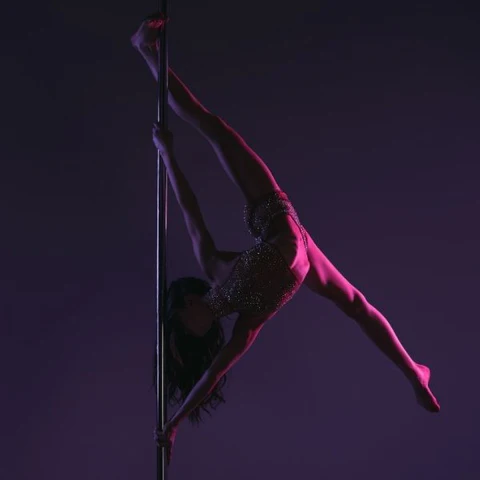

Why Pole Dancing?
Pole Dancing, a performance art form
Pole dance requires significant muscular endurance, coordination, strength, flexibility, upper body and core stability, as well as sensuality.
Pole dancing has gained popularity as a form of exercise with increased awareness of the benefits to general strength and fitness. These forms of exercise increase core and general body strength by using the body itself as resistance while toning the body as a whole.